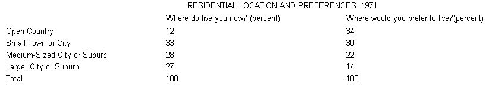

Les Scher is a California back-to-the-lander who also just happens to be a practicing attorney and an expert on property deals. MOTHER is proud to present this third excerpt from his book, Finding and Buying Your Place in the Country . . . a first-rate, comprehensive layman's guide to what is probably the most important purchase you'll ever make.
Excerpted by permission of Macmillan Publishing Co., Inc. from Finding and Buying Your Place in theCountry by Les Scher. Copyright © 1974 by Les Scher. Price $6.95 paperback, $12.95 hard cover.
When you find some land that is right for you, that meets all your requirements and feels like home, you will want to evaluate what that land is worth and compare your results with the seller's asking price. Then you can begin the bargaining game described in the next chapter of this book.
To evaluate the price of the land you want to buy, regardless of where it is located, you can do a number of things without employing a professional appraiser. This chapter will tell you how to make your own appraisal of the property and how to hire a professional if you decide you need one. Finally, I explain how the seller establishes his asking price.
Determining the value of a piece of land is a complex and ambiguous process. If there is any such thing as a formula for finding land value, it would have to be: Value is determined by the law of supply and demand. Although the supply of land is ultimately finite, its availability is constantly fluctuating as large ranches, farms, and other land parcels are split up for sale to the public.
Large landholdings are being split up at an increasingly accelerated pace. Government reports estimate that more than one million farms will go out of business in the seventies. California alone has twenty thousand farms that will fold before 1980. Many of these farms will be absorbed by larger commercial farmers, known as "agrimonoliths," but there will also be a large amount of acreage that will be subdivided and sold to the general public. The most recent estimate is that 20 percent of the land in California will be subdivided within five years after it is sold. This same pattern is developing throughout the United States.
The United States Department of Agriculture has released its study of land value increases for farmland during the year 1970. Values increased in the following areas at the following rates:
The above figures are specifically related to farmland but the value of recreational land is increasing even faster, based primarily on the increasing demand. A government study in 197' showed that the number of second-home owners has been increasing at the rate of a quarter of a million each year.
The Bureau of Census took a special survey in 1971 to determine where the average person prefers to have his primary residence. The results are shown below:
By 1973, there were already over 3 million second or "vacation" homes, with the number increasing by 200,000 each year. In 1972, 15 percent of the total housing construction was for vacation homes, with a total of $8 billion being invested that year. All indications are that the rate of interested land buyers will continue to increase at a faster rate than land will become available and prices will continue to rise at varying rates in all parts of the country.
A LIST OF VALUE FACTORS Many elements must be considered in deciding whether the price of a piece of property is "worth it." A general list of the basic factors includes the following: - Supply.
-Demand. -Usability, e.g., level land is more valuable.
-State of the title, e.g., what "clouds," or defects, exist?
-Location, e.g., neighbors, schools, shopping, public transportation, church, recreational facilities.
-Directional growth of the area, e.g., industrial, commercial, recreational, or residential.
-Population and economic growth in the area.
-Aesthetics, e.g., nice view, landscaping, beautiful house.
-Road frontage.
-Accessibility to the property, e.g., condition of the roads.
-Water: quality and quantity.
-Soil and drainage, e.g., for agricultural and building purposes.
-Orchards and garden, e.g, have they been well cared for?
-Amount of timber and type of vegetation.
-Availability of utilities.
-Zoning and building codes.
-Public Health measures and regulations.
-Condition and age of the house and other structures.
-Size of the parcel, e.g., the larger the parcel, the smaller the price per acre.
-Any stigma attached to the property.
-Personal property included in the sale.
-Climate.
-Exposure of the land, e.g., north slope versus south slope. -Timing of the sale, e.g., the owner must sell quickly because he is being transferred to a different location in his job. Each of these elements has its own effect on the value of a parcel of land. For example, the closer property is to a populated area, the more desirable and expensive it will be. If it is close to employment, if it is accessible by a paved road, if utilities are supplied, if a house and other improvements are on the land, it will be more expensive than land without these features.
POTENTIAL USE
One of the main determinants of value is the land's potential for development, meaning that it is valuable not for its own qualities but as a possible site for future activities of a profitable nature. Thus, if large numbers of people are moving into the area and the land is level or nearly so, more intensive use of the land may be expected and this potential increases the value of the land considerably. This is because level land can be subdivided into more usable parcels than steep land. The real estate agent will always play up the land's suitability for subdivision to lure you with the thought of future profits and thus make the present asking price seem more reasonable. If large timber is standing on the land, the price will be higher because you can cut and sell the trees. It is irrelevant whether you actually want to do so. The fact is that the potential is there. When you evaluate land, look at the potential uses for it and how soon the property will be in demand for such uses. How close is the nearest subdivision and how well is it selling? Are any large industries planned nearby that might foretell a growing population? These things indicate the extent of the land's potential in determining its price.
HOW THE TAX ASSESSOR EVALUATES THE LAND AND ITS IMPROVEMENTS
A good place to start when determining the value of the land and its improvements is by checking the county Tax Assessor's records for the appraised market value. First you must know how current the appraisal is. Talk to a Tax Assessor to see how recently he has been to your area. Usually several assessors work in the office and you can ask to talk to the one who appraised the seller's land. He will tell you what he thinks it is worth, which is usually somewhat more than he appraises it for taxes. You can tell him what the seller's asking price is and get his opinion of it. You can also ask his opinion of any improvements on the land, their condition and value, independent of the land itself. He will take into consideration factors of depreciation and appreciation. The assessor will be familiar with prices of surrounding land and he can tell you what kind of prices land has been going for in your area. He will also know about developments being planned in the area and their possible effect on land values. This information is used in the most important and common of all appraisal techniques used by Tax Assessors and Land Appraisers, the Comparison Test.
THE COMPARISON TEST
A parcel of land is compared to other parcels in the area which have recently been sold to determine its current value on the market, often called the "fair market value." You must find out the purchase prices of two or three specific pieces of land nearby that have been sold recently and that are similar in size and major features to the land you are interested in. For instance, if you are looking at land along a creek, try to find out the price of creek land above and below your prospective place.
Since each parcel of land is unique, you must be careful in comparing prices. Any improvements and other features, such as buildings, orchards, ponds, and equipment, will raise the value of the property, so take these things into consideration. Two pieces of land that are basically similar except for the fact that one has a house on it and the other doesn't may be difficult to compare because of the added value of the house.
Where tax stamps are required on deeds, they can be used to find the purchase price of a piece of land. Prior to January 1, 1968, federal law required the placing of Internal Revenue Documentary Tax Stamps on every deed used to transfer property. Since that time many states have enforced their own tax stamp, or real property transfer tax, laws. If your state imposes a transfer tax, you can find out how the tax is computed from the county Recorder and look up the date of any land parcel to find out the purchase price from either the stamps affixed to it or the stated amount of taxes which were paid.
For example, under the old federal tax, 55 cents worth of tax stamps were required for every $500 or fraction thereof of the purchase price. Thus, property that sold for $19,850 would have $22 worth of documentary stamps on the deed. To figure out the sale price from the stamps, divide the amount of the stamps by 55 cents then multiply that quotient by $500. The basic procedure can be used to determine the selling price whenever taxes are required. However, you must use some caution when doing this, because buyers frequently include more stamps than required to make the property seem more valuable when they decide to sell it. Thus take as many different samplings as you can. After looking at recent selling prices of comparable land you will price land currently for sale. The more land you look at, the better idea you will have as to whether the land you like is priced high or low for the area. Ask other real estate agents who show you land if they are familiar with the land you are interested in. Tell them what the asking price is to see their reaction. Of course, you should not rely on their appraisal, but it will be interesting to hear what they say about it. When you compare the asking prices of other land for sale remember that asking prices are always inflated.
As you compare the price of similar parcels to the land you are interested in, try to determine if there is justification for any difference in price. If a large discrepancy exists with no justification that you can see, keep it in mind to bring up during the bargaining and negotiations with the seller when you are pointing out why the price is too high. If the seller bought the land within the past few years, try to find out the price he paid for it. You can simply ask him, although he may be reluctant to tell you, especially if he is making a large profit. You can look up his deed and determine the purchase price by the amount of transfer taxes paid or the number of tax stamps if they are required (remembering, always, that he might have put more stamps on than was necessary.) Also compare the Tax Assessor's appraised value of his land the year before he bought the property with its appraised value after he took title. The amount of increase reflects the amount he paid for it.
You should ask everyone familiar with the property his opinion of the reasonableness of the asking price. This includes the Building Inspector, Tax Assessor, other real estate agents, people living in the area, and the Farm Advisor.
HIRING A PROFESSIONAL APPRAISER
A professional appraiser does not have access to any information you cannot get to, but experience is on his side. The appraiser who works in one section of the country for many years should be thoroughly familiar with property values in the area and how they are set. But if you do a thorough job of comparing land prices and getting the opinions of people who have been in the area a long time, I believe you can efficiently appraise the value of the land yourself. Even professional appraisals vary between 2 and 3 percent.
Unfortunately real estate appraisers are not regulated by any state laws so you must be careful whom you select. Anybody can call himself an appraiser. However, appraisers belonging to one of several national organizations are supposed to abide by a code of ethics and pass some accreditation standards. If you look in the local telephone book under "Appraisers," those with memberships in a professional organization will be so designated. The group that seems to be preferred by professional lenders is the American Institute of Real Estate Appraisers, identified as "MAS." Other groups include the Society of Real Estate Appraisers ("SRA"), the National Association of Real Estate Appraisers ("NREA"), the American Society of Appraisers ("ASA"), and the American Society of Farm Managers and Rural Appraisers, Inc. ("AFMARA"). In USEFUL RESOURCES at the end of this chapter you will find the addresses of these organizations. If you write them they will send you a list of where their appraisers are located. Always use a registered appraiser if at all possible.
Appraisal fees are usually based on the amount of time needed to complete the job, and that depends on how thoroughly a job must be done. Undeveloped land will not take as long to evaluate as land that has a house on it. Costs vary throughout the country, but the minimum is usually around $50. A good report includes an evaluation of the house and other structures, the availability of utilities and other services, the value of the location, the potential for resale at a profit, present zoning and possible future rezoning, recorded restrictions, the expected economic and population growth in the community, and comparison figures on other similar sales in the area. The result of this research will be a figure that is the appraised fair market value of the property in question.
Never use the real estate broker who is selling the land as your appraiser, because his commission depends on how much money the property sells for. You must also be careful that the appraiser you hire does not have a personal friendship with the broker handling the deal, which might sway his evaluation.
If you are a veteran you can apply for a loan, and the Veterans Administration will appraise the property for a small fee as part of the loan. You must fill out a form called Request for Determination of Reasonable Value. You do not have to go through with the loan, but you will know that if it is approved, the asking price is reasonable. The Veterans Administration should also tell you what their appraisal is.
You can also apply for a regular commercial or FHA loan to get an inexpensive appraisal, but they generally do not tell you the results of the appraisal. They will only tell you if they accept or reject the application for the loan.
The seller might have had a professional appraisal done. If he presents you with an appraisal that equals his asking price, go to the appraiser yourself, talk to him, and try to get a sense of how honest he is.
HOW THE SELLER SETS HIS ASKING PRICE
The seller usually arrives at his asking price by combining four factors: [1] the value of the property and the improvements; [2] the costs of selling the land; [3] the bargaining margin and the profit; [4] the psychology of numbers.
THE VALUE OF THE PROPERTY AND THE IMPROVEMENTS
The seller may determine the value of the property and improvements by using the same methods as those explained above. However, he naturally will tend to estimate the value higher than you, the buyer, because of his sentimental attachment to the property. He will tend to emphasize appreciation due to a greater demand to live in the area or to improvements made on the land, and overlook depreciation due to physical deterioration of the land and improvements, the obsolescence of structures because of stylistic trends and technological advances, or the decline in the demand to live in the area. The seller usually considers the price he paid for the land and adds on whatever he spent to get its actual value. But it is possible he paid too much, so don't assume you automatically have to pay him at least whatever he paid.
THE COSTS OF SELLING THE LAND
Once the seller determines what he believes the actual value of the property to be, he will add on the costs involved in selling the land. These could include the real estate agent's commission, attorney's fees, escrow charges, taxes, and survey, appraisal, and title insurance costs. By figuring them into the asking price, the seller passes these costs onto the buyer. This is standard procedure, and brokers generally advise sellers to set their prices in this manner.
THE BARGAINING MARGIN AND THE PROFIT
The seller then adds on a bargaining and profit margin figure, usually anywhere from 10 to 50 percent of the property's value as he sees it. Part of the purpose of this additional figure is to give the seller room to negotiate with the buyer. When the buyer offers a low figure the seller can "compromise" by coming down in his asking price and still realize a profit. He might allow the buyer to talk him down in price several times, giving the buyer the illusion that he is getting a "steal." If the seller finances the purchase himself; he will realize an additional profit in the interest over the years so he might reduce his initial profit margin by quite a bit.
The real estate agent often plays an important role in setting the price because sellers rely on his appraisal and judgment. One common practice is for the agent to set the price high in order to convince the seller to give him an exclusive listing. He makes a few attempts to sell the property, then tells the seller the market is bad and he should lower the price. The seller almost invariably follows the agent's advice. Then the agent tries to get a quick sale and commission. He will lower the price according to how desperately he needs a sale. Competition is so cutthroat in the rural real estate business that most agents would rather sell the property and take a small commission than risk losing the seller to another agent when his contract expires. You might come along at just the right time.
However, usually the agent estimates high, hoping that a buyer will pay the inflated price, which will increase his commission since it is based on a percentage of the sale price. Especially if he knows that the seller is not in a hurry to sell, he may let the property sit on the market until the right buyer comes along to take it at the high price. In general, all the agents in an area will try to keep prices inflated because it helps them all.
THE PSYCHOLOGY OF NUMBERS
Often a seller, or agent, will use a figure that seems much lower than it actually is. For example, instead of setting the price at $17,000, he will ask for $16,750. This is an old device which was first used by J.C. Penney and is now widely employed as a sales technique. The psychology of the odd price gives the buyer the feeling that he is getting a bargain and that the price has been cut as far as possible.
THE APPRAISAL AS A SAFETY VALVE IN THE CONTRACT OF SALE
A common safety valve put in buyers' contracts by attorneys is the condition that the purchase may be terminated if the buyer has the property appraised and he is dissatisfied with the results. You should always write in the parenthetical part that you are having an appraisal conducted on the property. You can use anyone you want as an appraiser. If you should decide sometime after the seller has signed the contract and made it binding that you want out of the deal, all you have to do is write the seller a letter saying you do not approve the results of the appraisal you had done. You don't even have to show him these results.
USEFUL RESOURCES
The following is free from any FHA office.
Questions and Answers on FHA Home Property Appraisals -HUD-38-F
The following are available for the specified price from:
The Superintendent of Documents
Government Printing Office
Washington, D.C. 20402
U.S. Land Prices: Directions and Dynamics Catalog No.
Pr 36.8:Uri/2R31 no. 13, 75 cents
Major Statistical Services of the U.S. Department of
Agriculture. Vol. 6, Land Values and Farm Finance,
1971. Catalog No. A 1.76:365/v.6, 45 cents
You can get appraisal information and a directory of appraisers throughout the United States from each of the following professional appraiser organizations:
American Society of Farm Managers and
Rural Appraisers, Inc.
470 South Colorado Boulevard
Suite 8
Denver, Colorado 80222
American Society of Appraisers
Dulles International Airport
P.O. Box 17265
Washington, D.C.
National Association of Real Estate
Appraisers
22 East 13th Street
New York, N.Y. 10003
Society of Real Estate Appraisers
7 South Dearborn Street
Chicago, Illinois 60603
|
|
|
 |